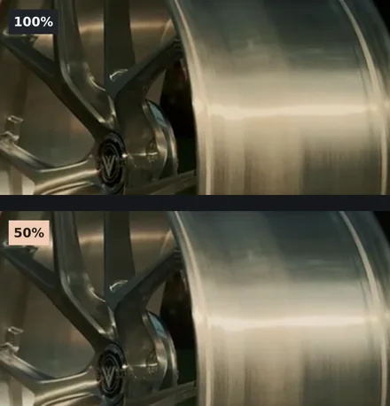

Cinemetic LUT Pack Vol. 1
5 โทนสีสำหรับงานรถ กลางคืน และคลิปที่อยากให้แสงกับเงามีบรรยากาศ ตั้งแต่เขียวหม่นไปจนถึงแสงนีออน
5 ไฟล์ .CUBE · 33 × 33 × 33 · Rec.709
ซื้อบน Payhip · US$10.99ดาวน์โหลดไฟล์ ZIP ผ่าน Payhip หลังชำระเงิน
เลือกโทนให้เข้ากับช็อต
- Underground Green
- เงาเขียวหม่นสำหรับบรรยากาศใต้ดิน
- Shadow & Amber
- เงาลึกและไฮไลต์อุ่น เหมาะกับช็อตไฟหน้ารถ
- Cold Steel
- ฟ้าหม่นโทนโลหะสำหรับฉากอุตสาหกรรม
- Midnight Slate
- ฟ้าเทาและสีอิ่มตัวต่ำสำหรับฉากกลางคืน
- Neon Isolation
- น้ำเงินเข้มพร้อมแสงไซแอนและแดง
ใช้ได้กับ DaVinci Resolve, Adobe Premiere Pro และโปรแกรมที่รองรับไฟล์ .CUBE หากถ่าย Log ให้แปลงเป็น Rec.709 ก่อน แล้วค่อยใส่ LUT และปรับความเข้มให้เข้ากับแสงของช็อต
ลองลดความเข้ม LUT แล้วดูเงาในล้อ
ช็อตเดียวกัน ใช้ Shadow & Amber เต็มที่ในภาพบน ส่วนภาพล่างผสมภาพเดิมกับผล LUT อย่างละครึ่ง ลองมองเงาด้านในล้อ แล้วเลือกความเข้มให้เข้ากับแสงของช็อต

Same wheel shot with Shadow & Amber at full strength (top) and a 50% blend (bottom). Compare the shadow detail inside the wheel.
Cinemetic LUT Pack Vol. 1 in English
Five creative 3D LUTs for automotive footage, night scenes, and neon lighting. The digital pack includes five 33 × 33 × 33 .CUBE files designed for Rec.709 footage.
Underground Green brings out muted green shadows. Shadow & Amber warms highlights. Cold Steel cools the palette, Midnight Slate adds subdued blue-grey tones, and Neon Isolation brings out cyan and red accents.
For Log footage, convert it to Rec.709 first. Then apply your chosen creative LUT and adjust its strength to suit the shot. Use the files in DaVinci Resolve, Adobe Premiere Pro, or another editor that supports .CUBE LUTs.
Buy on Payhip · US$10.99